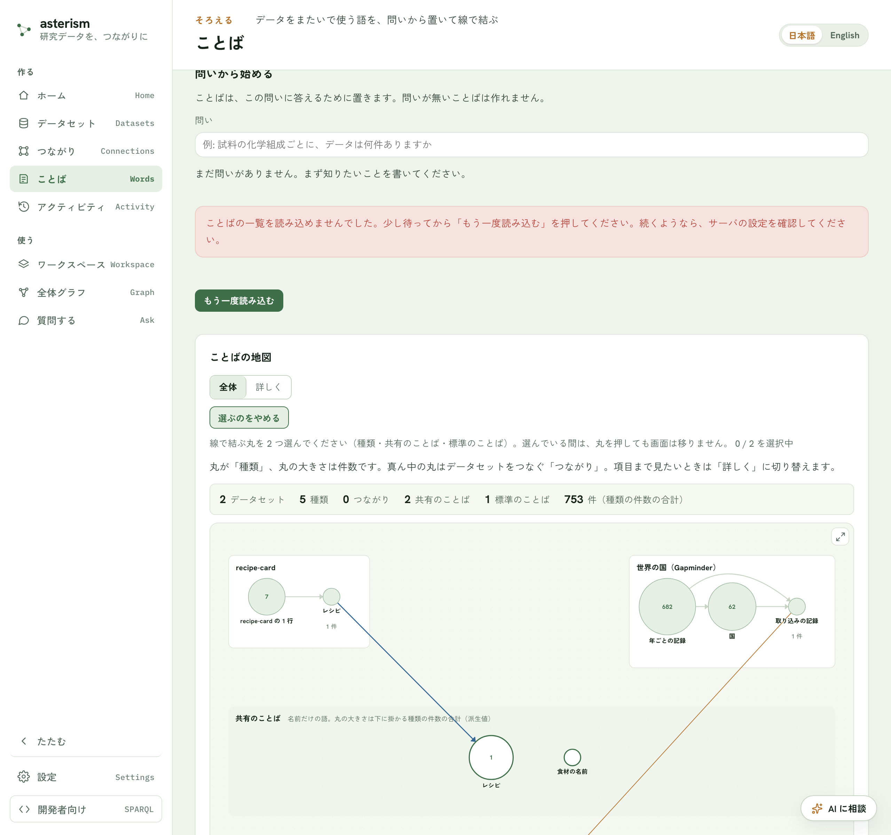
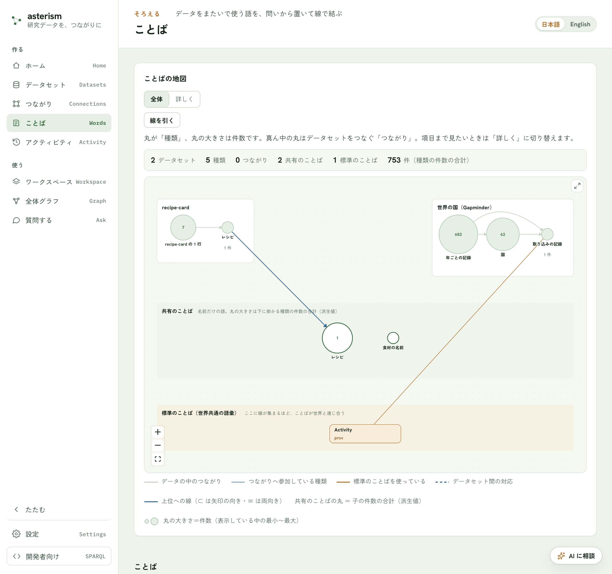
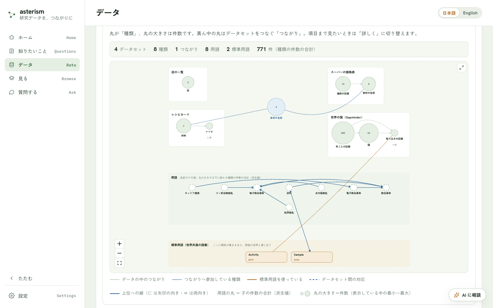
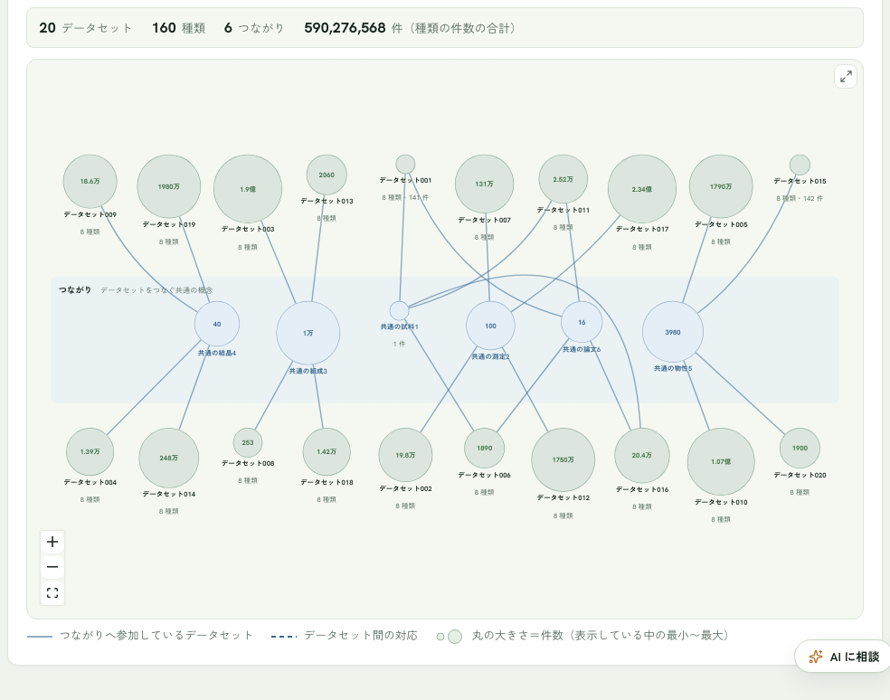
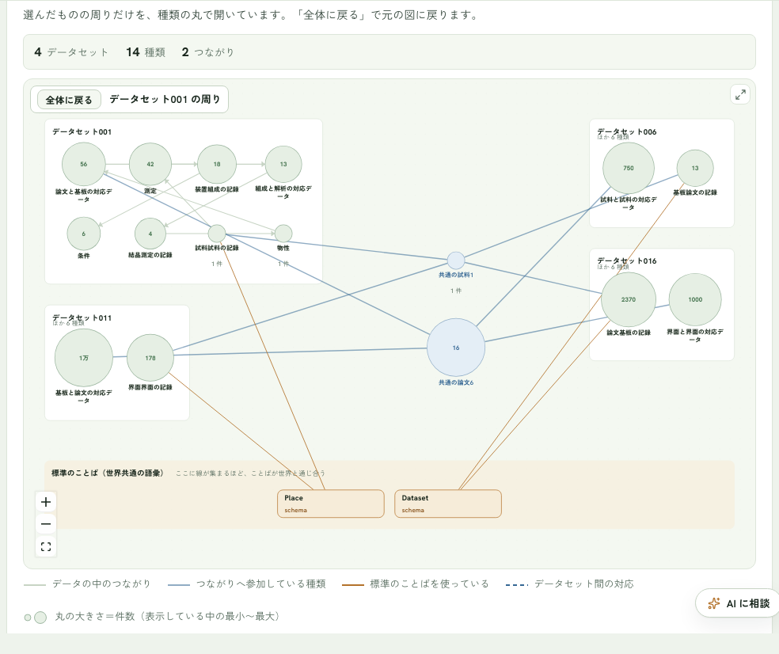

知りたいこと — テーマ・問い・用語
用語とは
複数のデータセットをまたいで使う「データの種類」と「項目」の名前を、用語と呼びます。用語には 2 通りあります。
- 取り込んだデータが使っている用語 — 各データセットの設計から自動で集まります。複数のデータセットで名前が揃っているほど、データをまたいだ質問や比較ができます。
- 人が作る用語 — 人が名前を付けて作る、実体を持たない用語です。個々のデータは持たず、名前だけを持ちます。データセットや標準用語と関係を決めて初めて、質問に答えられるようになります。
人が作る用語は、問いに答えるために作ります。問いのない用語は作れません。用語は、特定のテーマの持ち物ではありません。どのテーマからも同じ用語を使え、テーマを外しても用語・関係・問いは残ります。
入口とテーマ
メニューの「知りたいこと」を開くと、テーマごとのカードが並びます。テーマは「知りたいことのまとまり」で、カードには次が出ます。
- 問いごとの 輪（答えるデータセットの数 ÷ 全体）と、その問いの題
- 題の下の実行文 — その問いを機械がどう数えるかを、機械が組んだ 1 文で（例: 「試料のうち、ZT がいちばん高いものを出します（データセットごと）」）
- 要る用語（押すと用語のページへ）
- 公開しないメモの問い（下）— 「メモの問い 2 件」の 1 行に畳んであり、押すと開きます
- 主ボタンは「問いを足す」（このテーマに問いを足す）だけです。カード右上の「…」に、「答えを見る（出典つき）」（質問する画面へ、題を持ち越す）・「型紙を書き出す」・「テーマを外す」があります
最初にこの画面を開いたとき、すでに作ってある問いがあれば、それらを集めたテーマ「はじめの問い」が 1 つ作られます（2 回目以降は作られません）。どのテーマにも入っていない問いは、別のカードに出ます。用語の一覧の画面はありません（用語は、カードの札から用語のページへ入ります）。用語の地図は、データセットの詳細の「中身」タブの末尾にあります（用語の地図）。
人が決めた関係の一覧は、用語のページの「決めたことをすべて見る」と、ホームで星を選んだときの「決めたこと N 件 →」から開きます（下の「決めたこと」）。
ホームの左の会話の「？ 問いを書く」ボタンと、この画面右上の「？ 新しいテーマを作る」ボタンは、どちらもホームの会話を「問いを書く」で開きます（作る操作は、ホームの作業場 1 か所にまとめました）。途中で閉じても下書きが残り、「続きの下書き」から続けられます。会話の「閉じる」を押すと、下書きを残すか捨てるかを聞かれます。
知りたいことから作る（6 段）
「新しいテーマを作る」ボタンで、6 段の手順が開きます。手順バーは、かんたんモードと同じ見た目です。
- 知りたいことを書く — テーマの名前と、答えてほしいことを 1 行ずつ書きます。データはまだ無くて構いません。AI を使うなら「AI に読ませる」ボタン、使わないなら「AI を使わず手で書く」ボタンを押します。質問する画面で答えられなかった問いは、題が最初の 1 行に入った状態で開きます。
- AI に読ませる — 問いから、答えに要る「種類」と「項目」、あいだの関係、英語名と別名（よくある列名）を AI が下書きします。AI に渡すのは、問いの文と、すでにある用語・標準用語の名前だけです（データの値は渡しません）。AI が書くのは決まった形の表だけで、SPARQL・コード・IRI は書きません。AI が未設定のときや失敗したときは、止まった理由が出て、「手で書く」ボタンで先へ進めます（書いた問いは残ります）。
- 用語をたしかめる — 用語の表です。日本語の名前・英語の名前と別名・種類か項目か・「既にあるもの」・「どうする」を、1 行ずつ決めます。「既にあるもの」は、標準用語と、すでにある用語に名前が完全に一致したものを機械が見つけて出します（部分一致は出しません）。一致した行は、それを使うのがはじめの選択ですが、「どうする」でいつでも変えられます。
- 関係をたしかめる — AI が下書きした関係を、1 行ずつ「そう」「違う」で答えます。はじめは何も選ばれていません（選ぶまで、置かれません）。循環や、種類と項目の混在は、機械が止めて理由を出します。下の「このテーマの上位構造」に、「そう」と答えた関係が字下げで並びます。同じ親を要る用語が 2 つ以上あるときだけ、まとめ名の提案が出ます（足すかどうかはあなたが決めます）。
- ためす — 問いごとに、「数え方 × 種類 × 項目」を選びます。AI の下書きには印が付き、機械が組んだ実行文が必ず並びます。あなたの意図と食い違っていたら、数え方を選び直します。「いまは N データセットが答えます」も出ます。今の数え方は 件数・範囲・上位の値 の 3 つで、ほかのもの（推移・値で絞る・結合 1 段）や、型に合わない問いは「メモの問い」になります。問いは 1 つずつの画面ではなく、1 枚に全部並びます。
- 置く — 保存する用語と、その ID（ここで変えられます）、関係、問いとその実行文の一覧が出ます。AI の下書きを使ったときは、来歴に「AI 下書き → 人が確定」の印と日付だけが残ります（AI の生の出力は保存しません）。「置く」ボタンで、用語・関係・問い・テーマをまとめて 1 回で置きます。途中で失敗したときは、置きかけたものを取り消し、何も残しません。
用語の ID は、半角の英小文字で始まり、英小文字・数字・アンダースコアだけです。英語の名前から機械が案を作り、⑥で確かめます（意味を先に・ID を後に）。同じ ID は同じ用語を指します。すでに使われているID や、同じ ID の用語が 2 つあるときは、「置く」を押せません。
標準用語・量の種類との関係
「どうする」で標準用語を選ぶと、新しい用語は作られたうえで、その標準用語と「同じもの」として結ばれます（項目で、量の種類（QUDT）に一致したときは「量」の関係で結びます）。「既にある用語を使う」を選ぶと、用語は増えません。
別名
別名は、あとでデータを置いたとき、列名と突き合わせる手がかりです。かんたんモードの「意味をつける」で、列名や意味が別名に完全に一致したときも、既にある用語の候補として「（別名 … が一致）」と出ます。部分一致では当てません。
メモの問い
今の数え方（件数・範囲・上位の値）に当てはまらない問いは、テーマの「メモの問い」として残ります。公開されず、質問（Ask）や外部のツール（MCP）にも出ません。数え方が増えたら、型に合うものから公開の問いにできます。
問いを足す・型紙
テーマのカードの「問いを足す」ボタンで、同じ 6 段が開き、置くとそのテーマに問いが加わります。「型紙を書き出す」ボタンは、そのテーマが要る用語のうち、種類ごとに 1 つの CSV（見出し行だけ）をzip で書き出します。先頭の列は <種類>_id、続く列は、その種類に結んだ項目の英語名（なければ ID）です。データから作るときの出発点になります。
かんたんモード・質問する からの入口
かんたんモードの「ためす」で足した自分の問いは、「テーマに入れる」ボタンで、ほかのデータにも通じる用語の問いとして写し、選んだテーマに入れられます（元の問いは残ります。上位に用語が無いときは案内が出ます）。問いの題の下には、実行文も出ます。質問する画面で答えられなかったときは、「この問いをテーマに入れて育てる」ボタンで、題を持ち込んで 6 段を開けます（AI は、あなたが「AI に読ませる」を押すまで使いません）。
問いは AI に提案してもらえる
問いを書く前に、AI に案を出してもらえます。ボタンは 3 か所です（AI が設定されているときだけ出ます）。
| ボタン | どこに出るか | AI が読むもの |
|---|---|---|
| 「問いを提案してもらう」 | ホームで種類の星を選んだ札。データを公開した直後の完了画面 | データセットの名前・列の見出しと型のヒント・何の行か（種類の名前）・すでにある問いと用語の名前 |
| 「この論文から問いを提案してもらう」 | 文書（論文）を取り込んだ直後と、そのデータの詳細 | 文書の要旨と結論の文（合計 2,500 字まで）・すでにある問いと用語の名前 |
| 「この用語で聞けることを提案してもらう」 | 答える問いが 1 つも無い用語の札と、用語のページの「使う問い」が空のとき | 用語の名前・種別・合わせた標準用語・周りの関係の文・入っている種類の名前 |
- 渡さないもの: データの値（セルの中身）・論文の本文全体・PDF そのもの・あなたの ID や IRI。AI は列の見出しと名前だけで問いを考えます。そのため、問いの中の「SnSe を含む」のような語は、AI が文から写したもので、データの中身を見て当てたものではありません。
- AI が書くもの: 問いの文と、答え方（件数・範囲・上位・値で絞る・〜ごと・推移・結合・要因・一部・一種）の選択だけです。SPARQL・コード・IRI は書きません（そう見える文字列は機械が捨てます）。
- 機械が絞る: AI の案のうち、答えられる形に落ちるもの、名前が列や用語に実在するもの、すでにある問いと重ならないものだけが「こんな問いはどうですか」のカードに出ます（最大 5 本）。メモの問いは増えません。
- 押すまで何も残らない: ボタンを押したときだけ AI を呼びます（公開や取り込みの処理の中では呼びません）。カードの問いは保存されず、「閉じる」で消えます。「この問いで始める」を押すと、その問いが入力欄に入って問いを書く流れに移り、送って置くまでは何も保存されません。置いた問いには「AI が下書きした」印が付きます。
画面の見かたは 星図・データを公開した直後と文書はデータの追加 にあります。
用語のページ
テーマのカードの用語の札や、ホームの用語の「◯◯ を見る」を押すと、その用語のページが開きます。
- 名前（英語名・説明があれば添えます）・別名
- 使う問い（どのテーマに入っているかも）
- 入っている種類（項目）— 「この用語に種類を入れる」ボタンで、データセットの種類・項目を結べます（下）
- この用語に関する決めたこと（決めたこと）。「決めたことをすべて見る」で一覧へ
ID と IRI、履歴（作った日。AI の下書きを人が確定したときは、その日付）、「用語を外す」ボタンは、いちばん下の「詳しく」を開くと出ます。関係が残っている用語は外せないので、先に「決めたこと」で、その用語への関係を取り消してください。
まだ答えるデータがない（孤立の札）
作ったばかりの用語には「まだ答えるデータがない」の札が付きます。その用語の問いに答えるデータセットがまだ 1 つも無い状態です。この間は、用語は一覧と地図には出ますが、質問（Ask）や外部のツール（MCP）には出ません。関係が決まって答えられるデータセットができると、札は外れます。用語同士の関係だけでは札は外れません。札の付いた用語が 20 個を超えると、一覧の上に注意が出ます（作れる数の上限ではありません）。
この用語に種類を入れる（ひとこと決める）
用語のページの「この用語に種類を入れる」ボタン（項目の用語は「この用語に項目を入れる」）で、データセットの種類・項目を選び、その 1 つについて「ひとこと決める」ができます。名前が用語と完全に一致する種類は先頭に出ます。「ひとこと決める」の見かたは次のとおりです。
- 「「Sample」は [用語 ▾]」のように、決める相手の用語を選びます。
- 次の 3 つから 1 つ選びます。はじめは何も選ばれていません。
- 「の一種です」 — その種類（項目）は、用語の下位にあたる
- 「と同じものです」 — 名前が違うだけで、同じもの
- 「当てはまるものは無い」 — この提案を外す（次から出ません）
- 選ぶと、その下に「そう決めるとどうなるか」が 1 行で出ます（例: 問い「回折点は、どのデータセットに何件あるか」に答えるデータセット 0 → 1）。この数え方では何も保存しません。結べない組み合わせ（種類と項目・循環・まだ作っていない用語）のときは、理由が出て「そう決める」は押せません。
- 「そう決める」を押して初めて保存されます。「あとで決める」は何も保存せずに閉じます。
項目のときは「「A」の値は [用語 ▾] の一種です／と同じです」、量の種類を選んだときは「この項目「A」の量は [量 ▾] です」の言い方になります。
用語の地図 v0.40.0 (2026-09-02) で追加
データセットの詳細（「データ」でカードを開く、または「見る」のデータセットのページの「詳しい情報」）の「中身」タブの末尾、「ほかのデータセットとの関係の図」を開くと、地図が表示されます。データセットがつながるほど、この地図は育ちます。見せかたは「全体」（はじめの表示）と「詳しく」の 2 つで、次の「「全体」と「詳しく」」で違いを説明します。以下の線（図に描かれる線）の説明と集計は、おもに「詳しく」の表示のものです。
「詳しく」では、設計のあるデータセットの「種類」（箱）と「項目」（箱の中）をひとつの図に重ねます。箱を押すと、そのデータセットの詳細ページに移動します。図の下の帯は標準用語（世界共通の語彙）です。線は 4 種類あります。
- 灰色の実線 — データの中のつながり（種類どうしの関係）
- 緑の実線 — 標準用語を使っている（確定）
- 琥珀の点線 — 標準用語の候補（名前がほぼ一致する標準用語。まだ確定していません。候補は一覧から機械的に探すもので、AI は使いません）
- 青の点線 — データセット間の対応（「視点をつなぐ」で確定したもの）
なお、琥珀の点線は「詳しく」の標準用語の候補だけです。「全体」では、標準用語を使っている（確定）線を琥珀の実線（細め）で描きます。
用語の帯と「関係を決める」 v0.53.0 (2026-10-14) で追加
地図には、標準用語の帯の上に用語の帯が出ます（「全体」の種類まで開いたときと「詳しく」。データセットごとの丸の段では描きません）。種類の丸から用語へ向きのある線が、用語から標準用語へ同じ意味の線が伸びます。丸の大きさは、つながっているものの件数の合計です（派生した値です）。データセットが 0 件でも帯は描きます。配置は、同じ入力なら必ず同じになります。
地図で丸を 2 つ選ぶと「関係を決める」が出ます。小さなフォームで関係の種類を選んで確定します。選べる関係は、2 つの端の種類で絞られます。その関係が答える問いは、書いても書かなくても構いません。決めた関係は「決めたこと」の一覧に入ります。




図の上の集計（データセット・種類・項目・標準用語を使用・標準用語の候補・対応）は、同じ内容を数字で表したものです。「全体」のときの集計は、全体図に描いたもの（データセット・種類・つながり・標準用語・種類の件数の合計）だけを数えます。
「全体」と「詳しく」 v0.51.0 (2026-10-07) で追加
地図の上の「全体 ／ 詳しく」で見せかたを切り替えられます。はじめは「全体」です（選んだほうは次に開くときも覚えています）。


- 全体 — 種類を丸で描きます。丸が大きいほど、その種類のものが多く入っています。大きさは、いま図に出ている丸の中での比べです（図が変わると、同じ件数でも大きさが変わります）。件数は大きい丸なら丸の中に短く（「120万」など）、小さい丸なら名前の下に「820 件」と出ます。マウスを載せると正確な数が出ます。丸はデータセットの枠の中に並び、真ん中の丸は複数のデータセットをつなぐ「つながり」です。種類からつながりへ線が伸びます。標準用語は下の帯です。線は、間にある別の丸やその名前に重ならないよう、曲がることがあります。項目までは描きません。
- データセットが多いとき（7 つ以上、または種類が合わせて 41 以上のとき）は、丸が種類ではなくデータセットになります。丸の大きさは種類の件数の合計（図の中での比べ）で、件数は丸の中に、名前の下には「N 種類」と出ます（小さい丸は名前の下に「N 種類・M 件」）。真ん中の帯が「つながり」で、データセットはその上と下に並びます。線はデータセットからつながりへ 1 本ずつ（線に載せると「N 種類が参加」と出ます）。


- その丸（またはつながり）を押すと、その周りだけが種類の丸で開きます。ほかのデータセットは、つながりに参加している種類だけが出て、枠に「ほか N 種類」と書かれます。参加者が多いときは、上の帯に「ほか N 個のデータセットは省いています」と出て、数の多い順に一部だけが描かれます。上の「全体に戻る」を押すと元の図に戻ります。


- 丸やつながりにマウスを載せると、そこにつながる線が濃くなり、ほかの線は薄くなります。
- 詳しく — 種類を箱で描き、箱の中に項目を並べます。項目が標準用語に合っているか（使っている・候補・対応）まで見られます。
どちらの表示も、右上のボタンで窓いっぱいに広げて見られます（広げた中ではホイールで拡大縮小・Esc で戻る）。
「全体」（データセットが少ないとき、または周りを開いたとき）で丸を押すとその種類のページ、枠の名前のあたりを押すとそのデータセット、真ん中のつながりの丸を押すと「つながり」の画面に移ります。「全体」の線は、灰の実線がデータの中のつながり、青い実線がつながりへの参加、琥珀の実線が標準用語を使っている種類、青の点線がデータセット間の対応です。
件数の数え方
用語の一覧の画面はありません。作ってある用語は、テーマのカードの札から用語のページで見ます。用語を作るのは 6 段の手順で、ここに作るフォームはありません。データの種類は件数（その種類のものが何件あるか）、項目は使用回数で数えます。数えるのは公開済みのデータだけです。公開前の下書きは含まれず、公開すると集計に入ります。
決めたこと
人が決めた関係が 1 行 1 文 で並ぶ画面です。入口は、用語のページの「決めたことをすべて見る」と、ホームで星を選んだときの「決めたこと N 件 →」の 2 つです（左のナビには出しません）。「知りたいこと」「データセットの詳細」「かんたんモード」で決めたものの記録で、関係は引用できる事実として残ります。
> 「Sample（Starrydata）」は「試料」の一種 2026-10-09 問い 2 ［取り消す］
各行には、文（関係の中身）、両端の小さな札（データセット・用語・標準用語・つながり）、日付、その用語が答える問いの数が出ます。上の絞り込みで、次の見方に切り替えられます。
| 絞り込み | 何が並ぶか |
|---|---|
| すべて | 決めたこと全部（新しい順） |
| 一種 | 「〜の一種」と決めたもの |
| 同じもの | 「〜と同じ」と決めたもの |
| 量 | 項目の量（何を測った列か）を決めたもの |
| 標準用語 | 標準用語に結んだもの |
| つながり同士 | 別々に作ったつながりが同じものを指しているという対応（ここで決めることもできます） |
| 切れている | 結んだ先が今は見つからないもの |
取り消す
「取り消す」を押すと、実行する前に「取り消すと、問い「…」に答えるデータセット 2 → 1」のように帰結が出ます。「取り消す」でもう一度押すと取り消され、「やめる」で戻れます。取り消した関係は、いつでも決め直せます。
切れている
結んだ先（データセットや用語）が今は見つからない関係は、琥珀色の行で「切れている」と出ます。残してあるので、取り消しだけできます。
決められない組み合わせ
用語の結び先を循環させることはできません（すでに下にあるものを上に結ぶなど）。まだ作っていない用語や、種類と項目を混ぜた関係も決められません。「ひとこと決める」では、押す前に理由が出ます。
取り込みの記録
いつ・何が・どれだけ取り込まれたかの記録は、「データ」の上のタブ「記録」にあります（従来の「アクティビティ」は、ここに移りました）。
用語の名前を直す
用語の名前を直したいときは、そのデータセットを開いて「設計を見直す」ボタンから変更できます。複数のデータセットが共通で使う用語は、名前を変えるとそれを使うすべてのデータの検索・回答に影響するので注意してください。
標準用語に合わせる（任意） v0.5.0 (2026-06-15) で追加
自分のデータ専用の用語を、よく使われる標準用語（QUDT・schema.orgなど）に結びつけることができます。合わせておくと、他のデータと自動でつながり、外部のツールや AI もそのまま理解できます。合わせるかどうかは任意で、合わせなくても検索・引用はそのまま使えます。
合わせ方
データセットの「中身」タブを開き、候補から選びます。候補は標準用語の一覧から機械的に探すもので、AI は使いません。英語のふつうの言い方（例: temperature, crystal structure）でも検索できます。合わせたい候補が見つかったら「この標準に合わせる」ボタンで確定します。あとから解除することもできます。
この列は何を測っているか v0.17.5 (2026-08-21) で追加
項目名を標準に合わせるのとは別に、「この列は何を測っているか」という問いにも合わせられます。単位が手がかりになるので、項目名が略記でも見つかることがあります。合わせておくと、「熱伝導率を測った人」のようにデータをまたいで横断的に探せるようになります。
すでに使われている標準
データの中ですでに使われていた、よく知られた標準用語は、自動で検出されて一覧に表示されます。あらためて合わせる操作をしなくても、最初から標準に沿っている場合はそのまま表示されます。
関連
- データどうしをつなぐ話は crosswalk.md を参照してください。
- 公開の流れは getting-started.md を参照してください。